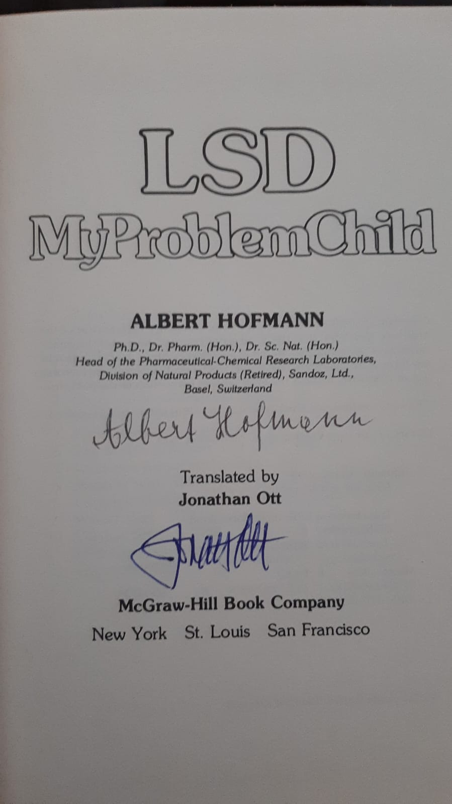

01 · BESTAND
Archivierung & Inventarisierung
Du bist dafür verantwortlich, Bücher zu erfassen, zu ordnen, zu beschreiben und ihre Geschichte für die Sammlung festzuhalten.
Mit Gründung des Vereins Bibliotheca Psychonautica wurde der Grundstein gelegt für eine zukünftige Stiftung mit dem Ziel der Zusammenführung und Bewahrung fundierter Privatsammlungen von psychonautischer Literatur, Videos, DVDs, CDs, Schallplatten, Bildern, Fotos, Kunstwerken, Briefwechseln, Tagebüchern, Forschungsmaterial und Manuskripten, um eine möglichst umfangreiche drogen- und rauschkundliche Bibliothek aufzubauen, die das psychonautische Wissen über veränderte Bewusstseinszustände lebendig erhält.
SammlerInnen von psychonautischer Fachliteratur können ihre privaten Nachlässe dem Verein bzw. der Stiftung vermachen, um dieses wertvolle Material zu erhalten und anderen Interessenten zugänglich zu machen und es vor eigennützigen, gewinnorientierten und kommerziellen Absichten, aber auch vor unachtsamer Entsorgung zu schützen.
Für den Aufbau der Bibliothek stehen dem Verein seit Juli 2013 Regalflächen in den Räumen des Nachtschatten Verlages in Solothurn zur Verfügung. Ab 2028 soll in Zusammenarbeit mit der Stiftung Gaia Media ein weiterer physischer Ort in Basel entstehen.
Es sind bereits einige umfangreiche Sammlungen von Büchern und Journalen eingegangen, die schrittweise inventarisiert werden. Die Liste des bis jetzt erfassten Bibliotheksbestandes kann beim Verein angefordert werden. Das Entleihen von Büchern ist ausschliesslich Mitgliedern vorbehalten und wird durch den Vereinsvorstand geregelt.
Die Mitarbeit ist ehrenamtlich. Gesucht sind Menschen, die punktuell oder regelmässig Verantwortung übernehmen und beim Aufbau der Bibliothek mitwirken möchten.
Du bist dafür verantwortlich, Bücher zu erfassen, zu ordnen, zu beschreiben und ihre Geschichte für die Sammlung festzuhalten.
Du bist dafür verantwortlich, Archivmaterial zu scannen, Dateien zu pflegen und Quellen für die Zukunft zu sichern.
Du bist dafür verantwortlich, Quellen zu erschliessen, Themen zu recherchieren und Texte oder Übersetzungen vorzubereiten.
Du bist dafür verantwortlich, Veranstaltungen, Kommunikation, Logistik oder den weiteren Aufbau des Projekts mitzugestalten.



Drei Schritte, ohne Eile und ohne Verpflichtung. Wir beraten auch Angehörige, die einen Nachlass ordnen müssen.
Eine kurze Mail genügt. Wir besprechen Umfang, Themen und Zeitrahmen – vertraulich.
Wir sichten die Sammlung vor Ort, klären, was in die Bibliothek passt, und organisieren den Transport.
Die Bestände werden erfasst und stehen Mitgliedern zur Recherche und Ausleihe zur Verfügung.
[PLATZHALTER] Echte Zitate und Porträts werden derzeit gesammelt. Die drei Karten zeigen das vorgesehene Format.
«Die Bibliotheca ist ein unfassbarer Schatz der psychedelischen Kulturgeschichte.»
«[PLATZHALTER] Zitat einer Forscherin oder eines Forschers, zwei bis drei Zeilen.»
«[PLATZHALTER] Zitat einer Sammlerin oder eines Nachlassgebers.»
Stiftung Gaia Media – Partnerin für den geplanten physischen Ort in Basel ab 2028.
Geplanter physischer Ort der Sammlung ab 2028, in Zusammenarbeit mit Gaia Media.
Solothurn – stellt dem Verein seit Juli 2013 Regalflächen zur Verfügung.
Für den weiteren Aufbau der Bibliotheca Psychonautica brauchen wir dringend aktive und passive Mitglieder sowie grosszügige Gönner und Sponsoren!
Bei Interesse sende eine Mail an info@bibliotheca-psychonautica.org oder nutze das Formular für Mitteilungen und Anfragen.